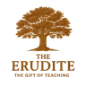

To deliver challenging truths with profound wisdom and deep empathy for the human heart.
The Compassionate Sage embodies a beautiful and often internally tense harmony of truth and grace. This archetype is driven by the Catalyst's relentless pursuit of transformative truth and the Erudite's hunger for deep understanding, but both of these intense drives are filtered through the Lover's profound empathy and sensitivity to the human heart. They are compelled to speak the truth, but they are acutely aware of the pain that truth can cause. This makes them uniquely equipped to be healers of the deepest wounds, offering counsel that is both unflinchingly honest and unconditionally loving.
This archetype is the living resolution to one of the most significant points of contention in the motivational framework: the clash between the Catalyst's "brutal honesty" and the Lover's need for "emotional safety". The Compassionate Sage does not choose one over the other; they integrate them. Their process involves first discerning the truth of a situation with visionary clarity (Catalyst), then understanding its complexities with intellectual rigor (Erudite), and finally, prayerfully considering how to communicate that truth in a way that honors and protects the heart of the recipient (Lover). They instinctively know that for truth to be truly healing, it must be delivered in a vessel of love.
They are the "Compassionate Challenger" and the "Wise Counselor" in one person. They excel as therapists, spiritual directors, and trusted mentors who are sought out for their ability to navigate life's most painful and complex issues. Their presence creates a rare environment of psychological safety where people feel they can confront their deepest flaws without fear of judgment. The primary challenge for the Compassionate Sage is emotional exhaustion. Bearing the weight of others' pain (Lover) while wrestling with hard truths (Catalyst/Erudite) can lead to "emotional overwhelm". Establishing strong personal boundaries and practices of self-care is not a luxury for them; it is essential for their survival and continued effectiveness.
Core question: “What is the truth that will unlock transformation here?”
Explore the gift →
Core question: “Is this subject worthy of my intellectual energy?”
Explore the gift →Core question: “Is this a safe place for the heart?”
Explore the gift →To translate complex truths into compelling, hopeful narratives that rally people to a cause.
8To fuse a bold, strategic vision with an infectious passion that mobilizes and inspires teams.
9To lead with decisive, transformative vision while fiercely protecting the well-being of the people involved.
12To develop people by combining clear, strategic guidance with inspiring, motivational coaching.
13To lead with profound wisdom and a clear plan, while providing deep, pastoral care for the team.
Take the assessment to measure all seven gifts and confirm your soul's chord.
Take the Assessment